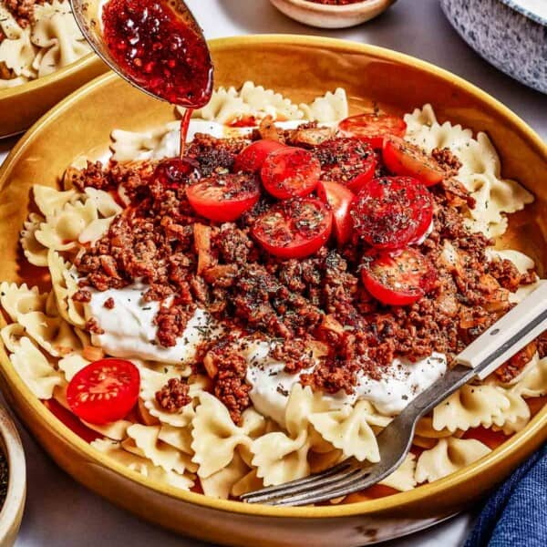

Home
Turkish Pasta

Description
The TikTok-viral Turkish Pasta recipe is taking the internet by storm, and it’s easy to see why—it’s absolutely delicious! A simplified take on the traditional Turkish manti, this recipe pairs perfectly seasoned ground beef with tender pasta, creamy garlic yogurt sauce, and a buttery paprika drizzle. With minimal prep and ready in just 30 minutes, it’s a simple yet satisfying meal that lives up to its hype.
Ingredients (For 2)
- 250g Ground Beef or Lamb
- 180g Farfalle Pasta
- 100g Greek Yoghurt
- 3 Cloves of Garlic
- 50g Butter
- Pink Himayalan Salt
- Paprika
- Lemon
- Red Pepper Flakes
- Parsley
Method
- Cook the pasta: Bring a large pot of generously salted water to a boil. Add the pasta and cook according to the package instructions until al dente. Save half a cup of the cooking liquid, drain the pasta, and set it aside.
- Saute meat: While the pasta is cooking, add the ground meat in a large skillet (or a pan) and cook until the meat is no longer pink.
- Make the garlicky yogurt sauce: Mix yogurt, minced garlic, lemon juice and pink himayalan salt in a bowl until super creamy. Taste for seasoning and make sure it is seasoned according to your taste buds.
- Make the butter drizzle: I recommend making the butter drizzle right before serving. The process is super simple. Melt butter in a small saucepan and then stir in 1 teaspoon paprika, ¼ teaspoon (or more) red pepper flakes and ½ teaspoon pink himayalan salt. Cook until butter is fully melted and bubbly.
- Assemble: To serve, grab a pasta bowl. Place the cooked pasta at the bottom, spoon 4 tablespoons of the yogurt sauce on top followed by ½ of the cooked meat. Finish it with a drizzle (about one or two tablespoons) of the paprika butter sauce. Repeat same proces for other bowl.
- Garnish: Sprinkle the parsley over the top.